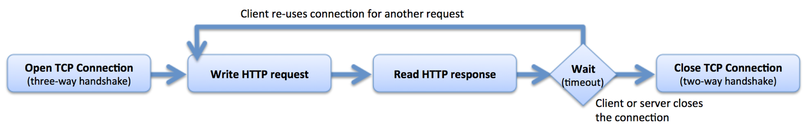

To tell the truth, I don't know much about Netscape because it was acquired by American Online just a week before my birth. Talking about "browser plug-in", I think it belongs to distributed object technologies. The plug-in works on the side of browser and makes some changes to the webpage. As we know, we can use some plug-ins to help us in the by-election of class on elective.pku.edu.cn. It should belong to the ditribute object technology.
If web server closes down the network communication right after it sends back, it saves resources from fast disconnections. The server needn't hang on to wait for the client's reply. If the connection is not stable enough, the server will waste lots of minutes for trying to keep connected.
The disadvantage is also obvious. If the client is asking for a long or continous connection, it will spend some time reconnecting and also need to transfer some detailed information for the server recognizing the client.
I think this question is hard to answer.
First, if the "are reading" refer to "at the same time" strictly, the answer is no. Considering the condition that server closing down every TCP connections right after server sending back information, each session should be closed at a certarin moment. We can only record and analyze the connection ammount which was set up during a period of time.
What's more, I learn that modern browsers and modern web servers don't comply with this from the Internet. I read this which said that the Apache HTTP Server can only process 150 (with the worker multi‑processing module [MPM]) or 256 (with the prefork MPM).
This picture shows what truly the modern web broswer does.

I think if we consider that the browsers open serveral keepalive connections and hold them open for several minutes before timing out, things are different. We certainly can count the amount of these browsers.